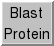

Blast Protein 
Blast Protein performs protein sequence searches using
a BLAST web service hosted by the
UCSF
Resource for Biocomputing, Visualization, and Informatics (RBVI).
Corresponding structures can be retrieved and automatically superimposed,
and the pseudo-multiple alignment
from BLAST can be shown in
Multalign Viewer.
The search results are included in saved sessions.
See also: mda
There are several ways to start
Blast Protein, a tool in the Sequence category.
When it is started from the
Info menu in
Multalign Viewer,
any of the sequences in the alignment can be specified as the query.
Otherwise, the query sequence can be:
- From Structure
- a protein chain from a structure open in Chimera
- Plain Text
- a protein sequence entered or pasted in the Sequence field
as plain text
Search parameters:
- Program
- blast (default) - protein-protein search
- psiblast - iterated protein-protein search, where each pass
after the first uses a PSSM (position-specific scoring matrix)
based on the results of the previous pass
- Database
- pdb (default) - sequences of structures in the
Protein Data Bank (PDB).
The List only... option
controls whether multiple hits with the same PDB identifier (i.e.
different chains) or only the best-matching one should be included in the results.
- nr - all non-redundant GenBank CDS translations +
RefSeq Proteins + PDB + SwissProt + PIR + PRF. This database is much
larger than pdb and will take longer to search.
- E-value (1e-X) - significance cutoff;
only matches with E-values ≤ 10-X will be returned
(X=3 by default)
- Matrix (BLOSUM45/BLOSUM62/BLOSUM80/PAM30/PAM70)
- amino acid substitution matrix to use for alignment scoring
- Passes (default 1)
- number of psiblast iterations; 1 pass is equivalent to blast,
whereas multiple passes will find more distantly related sequences
- List only best-matching chain per PDB entry (default)
- whether multiple hits with the same PDB identifier
(matches to different chains in that PDB entry) or only
the best-matching one should be included in the results
Clicking OK launches the search and dismisses the dialog.
Apply launches the search without dismissing the dialog,
Cancel simply dismisses the dialog,
and Help opens this manual page in a browser window.
The search is a background task.
Clicking the information icon  in the Chimera
status line
will bring up the
Task Panel,
in which the job can be canceled if desired.
in the Chimera
status line
will bring up the
Task Panel,
in which the job can be canceled if desired.
Blast Results
Results are returned as a table of sequences with several columns of
information. Which columns are displayed can be set in the
Column configuration panel.
Some columns of information are available for nr sequences
regardless of whether they are in the pdb subset:
- GI - sequence GI number
(for the query, model name is shown instead)
- Evalue - significance value
- Score - alignment score
- Description - text description (truncated)
Additional columns are available for pdb sequences:
- PDB - corresponding PDB identifier, including chain identifier
- Authors - structure authors
- Chain names
- chain identifiers and descriptions of polymer chains in the structure
- Copies - number of copies of the hit chain in the structure
- Date - structure deposition date
- Ligand formulas - chemical formulae of ligand chemical components
- Ligand names - names of ligand chemical components
- Ligand smiles -
SMILES strings of ligand chemical components
- Ligand symbols - residue names of ligand chemical components
- Ligand weights - molecular weights of ligand chemical components
- Method - method of structure determination
- Polymers - number of different polymer chains in the structure
(not counting multiple copies of the same sequence)
- PubMed - PubMed identifier of literature reference, if any
- Residues - number of residues in the hit chain
- Resolution - crystallographic resolution
- Species - scientific name of source organism
- Title - structure title
- Total atoms
- total number of atoms in the structure (all chains)
- Total residues
- total number of residues in the structure (all chains)
- UniProt
- UniProt identifier,
if any, for hit chain
- Weight - molecular weight of hit chain
Other than PDB identifier, the information in these columns is
retrieved using a web service provided by the
RCSB PDB.
One or more of the hits (lines in the table) can be chosen
with the left mouse button.
A block of lines can be chosen by dragging, or by
clicking on the first (or last) line in the desired block
and then Shift-clicking on its last (or first) line.
Ctrl-click toggles the state (chosen or not) of single line.
Buttons at the bottom of the results dialog:
- Show in MAV - display the
pseudo-multiple alignment
of the chosen sequences in
Multalign Viewer
- Load Structure
- retrieve and open the PDB structures corresponding
to the chosen sequences (as described for
Fetch by ID); they will be superimposed
automatically according to the pseudo-multiple alignment.
Entire PDB entries are retrieved, not just the matching chains.
- PDB Web Site
- show
RCSB PDB
entries for the chosen sequences in a browser window
- Columns
- show/hide the Column configuration panel, which contains checkboxes
to set which columns are displayed.
A maximum column width (default 40 characters) can be specified.
Buttons within the panel:
- All - show all columns in the table
- Default - restore the previously saved configuration
- Standard - use the factory default configuration
- Set Default - save the current configuration to the Chimera
preferences file
- Export... save the chosen rows, in the current sort order
and including the currently displayed columns,
as a file in CSV (comma-separated values) format.
If no rows are chosen, all will be exported. Note that some columns
may contain commas or newline characters (multiple lines), but these
are handled according to CSV standard by enclosing the values in quotes.
Spreadsheet software and other programs built to work with
the CSV standard will interpret the exported files correctly,
but user scripts need to account for the potential complexities,
and viewing the file contents directly may be confusing.
- Hide - hide the table without deleting the results;
it can be shown again using the Raise option of its
instance in the Tools menu.
This is also useful when the table has become obscured by other windows.
- Quit - delete the results
- Help - show this manual page in a browser window
Notes
Basic Local Alignment Search Tool (BLAST).
The BLAST
software is provided by the
NCBI
and described in the following:
Gapped BLAST and PSI-BLAST:
a new generation of protein database search programs.
Altschul SF, Madden TL, Schäffer AA, Zhang J, Zhang Z, Miller W, Lipman DJ.
Nucleic Acids Res. 1997 Sep 1;25(17):3389-402.
Basic local alignment search tool.
Altschul SF, Gish W, Miller W, Myers EW, Lipman DJ.
J Mol Biol. 1990 Oct 5;215(3):403-10.
Pseudo-multiple alignment.
The pseudo-multiple alignment from BLAST is not a true multiple alignment,
but a consolidation of the pairwise alignments of individual hits to the
query. This output corresponds to the BLAST formatting option
(alignment view)
"flat query-anchored without identities,"
in which identities and conservative changes relative to the query
are shown in upper case, nonconservative changes in lower case.
UCSF Computer Graphics Laboratory / May 2012